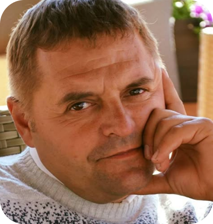
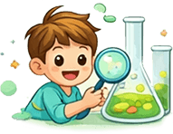
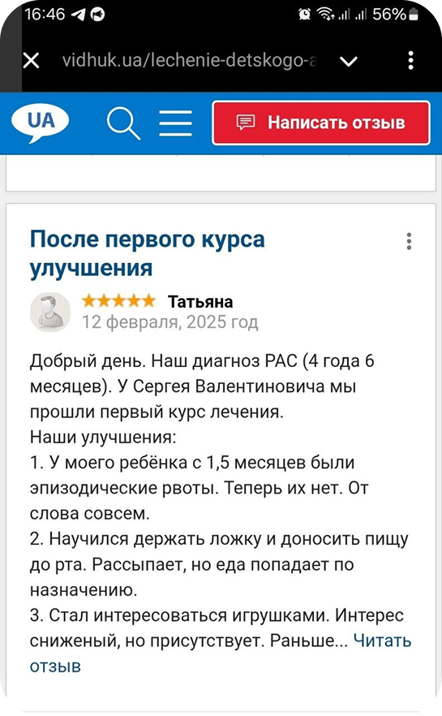
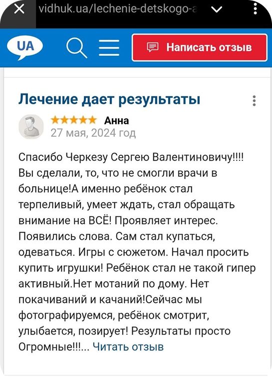

Відновлення нейронних функцій при аутизмі: молекулярно- біологічний підхід Сергія Черкеза
ARIS - наукова система створена для вивчення причин та механізмів рас
-
Система вивчення та дослідження аутизму
-
Унікальна методика корекції РАС
-
30+ років у молекулярній біології
Важлива інформація про мене

Вітаю Вас, шановні Гості!
Мене звуть Черкез Сергій Валентинович. Протягом 30 років я вивчаю причини аутизму. За фахом я є біолог, біохімік, імунолог та фізіолог. Я розробив власний успішний метод дослідження та терапії аутизму.
Використовуючи знання в галузі молекулярної біології та генетики, я досліджую причини розладів аутистичного спектру.
Також я є автор дослідних проектів:
Генетичні аспекти функціонування синапсів при розладах аутистичного спектра.
Епігенетичні механізми реалізації генетичної інформації при розладах аутистичного спектра.
Чому батьки довіряють терапію дітей мені ?
1
Понад 30 років досвіду роботи з дітьми
Я працюю з дітьми понад 30 років і за цей час допоміг сотням сімей впоратися з різними станами та труднощами.
Мій досвід дозволяє швидко визначити причину проблеми та підібрати ефективне рішення без зайвих експериментів.
2
Індивідуальний підхід до кожної дитини
У роботі враховую:
- вік дитини
- емоційний стан
- вплив сім’ї та оточення
- особливості розвитку
- поточний стан і симптоми
На основі цього підбираю персональну терапію, яка підходить саме вашій дитині.

3
Науковий аналіз симптомів
Я не працюю “наосліп”. Кожен випадок аналізується з точки зору сучасних знань і практики:
- визначається причина, а не лише симптоми
- враховуються взаємозв’язки в організмі
- підбирається обґрунтована терапія
Це дозволяє досягати стабільного результату, а не тимчасового покращення.
4
Постійний зворотний зв’язок з батьками
Ви не залишаєтесь сам на сам із проблемою. Я завжди на зв’язку та супроводжую вас на всіх етапах:
- відповідаю на запитання
- коригую терапію за потреби
- пояснюю, що відбувається і чому
Ви розумієте процес і впевнені в результаті.
Відгуки матусь моїх паціентів
Відгуки з сайтів vidhuk.ua і medcentre.com.ua


Відгуки з Facebook
Чим цей метод може допомогти дітям?
Покращення роботи нейромедіаторів
Відновлення балансу дофаміну та інших нейромедіаторів
Покращення концентрації та навчання
Краще оброблення інформації та довше утримання уваги
Зменшення сенсорного перевантаження
3меншується рівень стресу та дратівливості
Покращення емоціиноі взаемодії
Дитині легше проявляти інтерес до спілкування